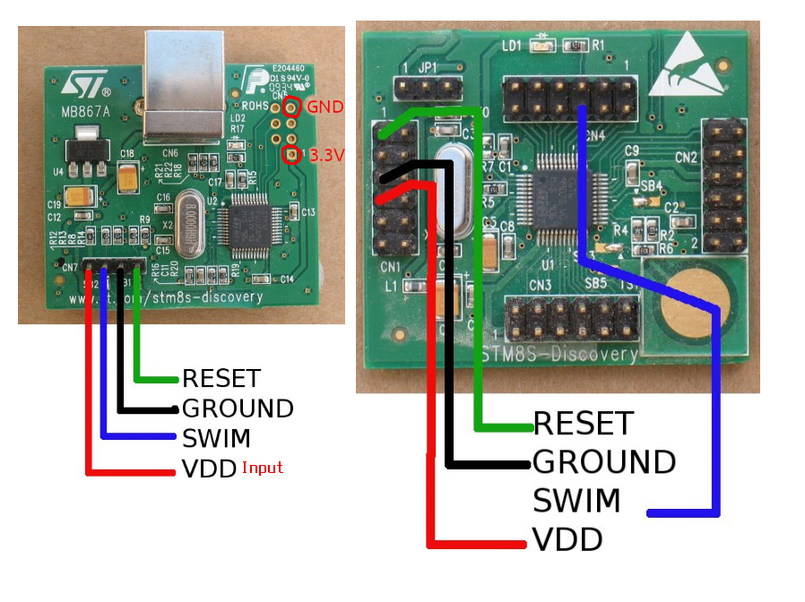

Pro výuku mikroprocesorové techniky používáme v současné době mikroprocesory řady STM8S.
Návody¶
Pro potřeby svojí výuky jsem sestavil následující:
- Céčko – pác věcí, kterých byste si fakt měli všimnout
- Oddělená kompilace a vlastní knihovny
- Generování zvuku – základy
- Základní použití časovače
- Použití časovače jako generátoru PWM
- Ultrazvukový měřič vzdálenosti pomocí timeru TIM2
Michal Dudka píše skvělý web o programování mikrokontrokérů: http://elektromys.eu. V sekci STM8 najdete spoustu pro nás zajímavých věcí:
- Vstupy a výstupy 1 – základy
- Vstupy a výstupy 2 – tlačítko
- Vstupy a výstupy 3 – logické úrovně
- Vstupy a výstupy 4 – PullUp rezistory
- Vstupy a výstupy 5 – Open-Drain
- Ovládání displeje s MAX7219
- Clock
- Alfanumerické LCD
- Knihovna milis – “Multitasking”
- Stavový automat
- Nábojová pumpa
- Buzení 7segmentového displeje
- AD převodník
Honza Vykydal pak napsal:
Ze dílny Michala Dudky pochází tyto pro nás zajímavé články:
Další velice cenné informace nejdete v sekcích:
Dokumentace¶
Celá řada STM8S používá stejnou sadu periferií. Jejich popis najdete v reference manuálu zde.
Různé čipy pak obsahují různou sadu těchto periferií. Co přesně se nachází na kterém čipu (plus další specifické věci) lze najít v datasheetu:

Přehled jednotlivých čipů jednotlivých řad rodiny STM8S pak najdete zde:
Hardware¶
Nucleo-8S208RB¶
Ve výuce používáme vývojovou desku Nucleo-8S208RB s mikroprocesorem STM8S208RB.

Tato deska je (ale nemusí být) napájena z USB. Obsahuje programátor s HW debugerem a USB2UART bridge. Můžete si zvolit pinout, který je Arduino-kompatibilní nebo plnohodnotný pinout, který sedí na univerzální PCB. Je tu tedy vše, co pro začátek potřebujete. Vyčerpávající popis najdete v článku STM8S208 Nucleo nebo v uživatelském manuálu.
STM8S Discovery¶
Dalším zajímavým vývojovým kitem je STM8S DISCOVERY s procesorem STM8S105C6. Kit obsahuje i maličkou bastl desku a programátor lze použít k programování libovolného procesoru STM8S. Více opět v uživatelském manuálu.

Standalone programátor¶
Při řešení samostatných projektů budeme postupně přecházíme k vlastnímu hardware, který by už neměl být na nepájivém poli, ale spíše na desce plošných spojů. V těchto případech budeme potřebovat μprocesor, který bude přímo v aplikaci a standalone programátor-debuger, pomocí kterého bude možné program ladit a nahrát. Možností je vícero – moc hezky to má popsáno Michal. Doporučuji přečíst!
(Jen bych doplním, že existuje ještě jeden klon ST-Linku, který se mně osobně osvědčil: mini ST-LINK/V2 STM8 STM32 emulator download super protection)
DeroBoard¶
V rámci dílenské praxe si ubastlíte vývojovou desku STM8S Dero Board. Tuto desku můžete použít i pro svoje samostatné projekty. Je osazena procesorem STM8S103F3. K dispozici máte všechny zdrojové soubory pro KiCad a hezkou rozpisku součástek.
Nebo…¶
Něco podobného, se stejným procesorem lze zakoupit i od čínských výrobců: STM8S103F3P6 development board.

Pokud poptáváte vybavenější procesor existuje podobná vývojová deska: STM8S105K4T6 Developmen Board. Ta vám může posloužit podobně jako oficiální STM8 Discovery.
USB to UART Bridge¶
Pokud plánujete projekt, kde μprocesor komunikuje s PCčkem, bude se vám hodit převodník USB TTL UART. Dá se běžně zakoupit i na českých e-shopech. Ještě je dobré upozornit, že ne každý operační systém automaticky komunikuje s každým čipem, proto je dobré věnovat pozornost tomu, jakým čipem, je osazen převodník, který hodláte zakoupit a zda se váš OS s tímto čipem kamarádí.
Univerzální PCB¶
Na projektové prototypování můžete s výhodou využít univerzální (prototypovou) desku. Existuje celá řada variant a vzorů (třeba tu nebo tam) universálních bastl-desek; zde bych rád upozornil na některé – pro nás zajímavé:
- řady po třech: 1 2
- jen body: 1 2
- s rozvodem napájení: 1 2
- s roztečí Arduino shield: 1 2 3 4. Tuto desku můžete použít s Nucleo-kitem Nucleo-8S208RB.
Dutinkové a kolíkové lišty
K univerzálním deskám se vám budou hodit dutinkové lišty a pinové řady, (také zde) s jejichž pomocí můžete svou univerzální desku posadit na Nucleo-8S208RB nebo STM8S Discovery.
Další součástky a hotové moduly¶
Je ještě spousta dalších udělátek, které stojí za to zmínit. Omezím se jen na nákupní seznamy. Je asi jasné, že mi nejde o konkrétní obchod, ale spíše o zboží, které se jistě dá zakoupit i někde jinde.
Vývojové nástroje¶
Vývojové nástroje jsou IMHO největší slabina platformy STM8,
ale při troše snahy se to dá :). Co se ale ST povedlo, to je nástrtoj
STM8CubeMX.
Doporučuji si ho nainstalovat. Není nijak klíčový, ale hodí se.
OpenSource nástroje nejen pro Linux¶
Celou problematiku jsem zpracoval v samostatném návodu: Vývoj STM8 s OpenSource nástroji. Ve zkratce to vypadá takto:
- Kompilátor SDCC
- Jako vývojové prostředí doporučuji VSCodium
- Moje šablona pro vývoj SDCC a GNU Make https://github.com/spseol/start-stm8
- Starší anglický návod s několika mouchama: https://github.com/hbendalibraham/stm8_started
Cosmic STM8+Eclipse balíček pro Linux¶
Zatím je vše ve fázi testování. Zveřejněno v lednu 2022: https://www.cosmicsoftware.com/download_stm8_eclipse.php Projekt vypadá velmi slibně.
Nástroje pro M$ Windows¶
- Vše velmi hezky zpracoval Michal Dudka na Elektromyši. Součástí je i vzorový projekt s knihovnami pro STM8S103, STM8S105 a STM8S208.
- Jako vývojové prostředí leze použít STVD s komipilátorem Cosmic.
- Oba nástroje je možné bezplatně používat, když se zaregistrujete. Bohužel nejsou ani jeden OpenSource.
Další užitečné nástroje¶
- The Dot Factory
- Generátor obrázků a fontů pro maticové displaye
- http://www.eran.io/the-dot-factory-an-lcd-font-and-image-generator/
Odkazy¶
- http://www.fit.vutbr.cz/~martinek/clang/
- http://jaknaprojekty.davidm.cz/
- https://www.tutorialspoint.com/cprogramming/
- Wikibook Programuje v jazyce C.